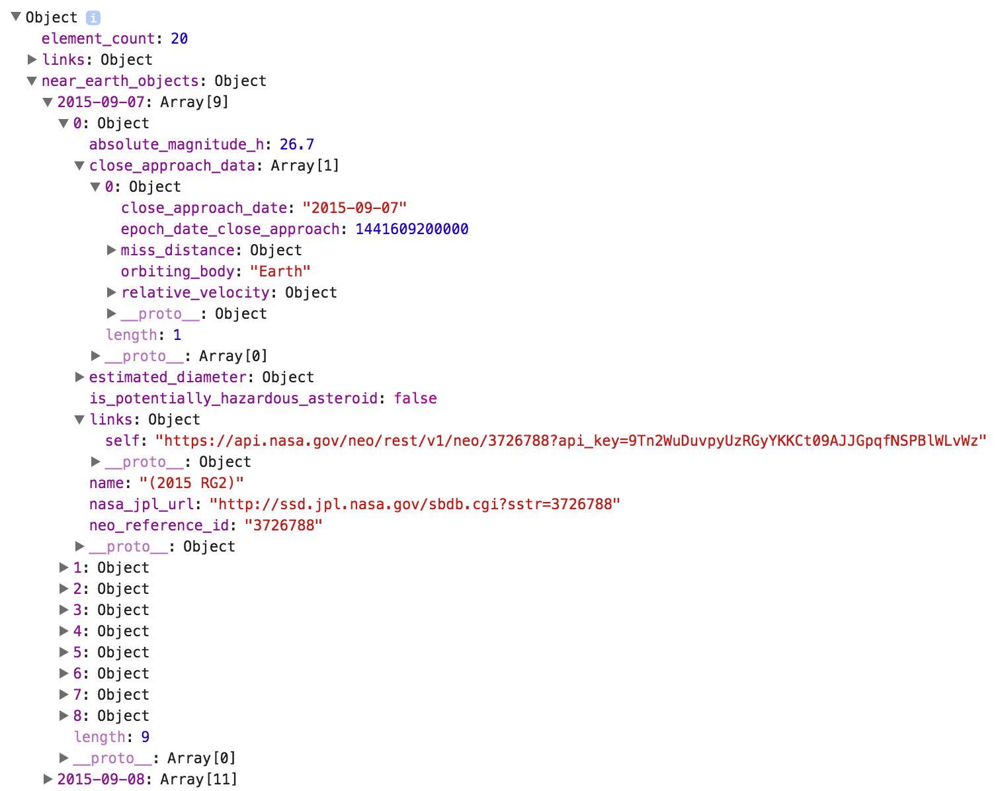

NEO Feed API
NEO API Background
The final NASA API that this guide explores is the NEO (Near-Earth Object) Feed API. Out of the three specific API's this guide discusses, this API has the least amount of information present on the NASA documentation page. The documentation that is present can be found here:
This guide will explore the NEO feed API but it is worth mentioning that there are three other associated APIs called NEO-Lookup, NEO-Browse, and NEO - Live Documents. NEO Feed returns a JSON object that contains an array of all the objects that have their closest approach to earth over the requested date range of the query (with a maximum of 7 days). NEO-Lookup returns information on one specific object that the user queries, NEO browse returns a JSON object containing the overall asteroid data set, and NEO - Live Document is a built-in web application on the API site with integration for mobile development. As mentioned above, the NEO Feed API does not contain very much information regarding the metadata that is returned from the API. There is a simple query example provided but not much more documentation than that. This guide will fill in these caps by explaining the returned metadata in detail, potential issues with parsing this data, and lastly this guide will go through and show a complete example of the implementation of the NEO Feed API.
NEO Feed Query
The NEO Feed is queried with JavaScript very similar to the other NASA API's as seen below:
var exampleURL = "https://api.nasa.gov/neo/rest/v1/feed?start_date=2015-09-07&end_date=2015-09-08&"
var apiKey = 'Your Key Goes Here';
var request = new XMLHttpRequest();
request.open('GET', exampleURL + 'api_key=' + apiKey, true);
request.addEventListener('load',function(){
if(request.status >= 200 && request.status < 400){
var response = JSON.parse(request.responseText);
console.log(response);
}
else {
console.log("Error in network request: " + request.statusText);
}});
request.send(null);
The query request follows the query template found at the documentation link above. The query URL accepts a start date and an ending date and will then return a JSON object containing an object that has individual methods labeled in conjunction with the date range requested. As mentioned before, this API will only accept a maximum date range of 7 days.
NEO Feed Returned JSON Metadata
As mentioned before, the current documentation for the NEO Feed does not highlight the available metadata that this API returns. Using the above query example, here is the returned JSON object in its entirety.

The JSON Object is broken down into the following sub objects and arrays:
- element_count
This is the total sum of individual celestial objects that the query returns across all dates in the requested date range. - near_earth_objects
This is an object that contains all of the query information the developer seeks. The object is broken up into individual methods that correspond to the dates in the query range. As you can see in the example above, this example requested the date range from 2015-09-07 to 2015-09-08 and the return object contains an individual method for each date. As a side note, this makes parsing the data challenging which will be further explored later in this guide. - Date Methods (2015-09-07 and 2015-09-08)
The returned date methods are arrays of JavaScript objects corresponding to the celestial objects that have their approach closest to the earth on the date of the method. - Object (Celestial Objects)
The next item down in the JSON object is the actual returned celestial object in the date method array. These are not given specific object names but can be individually parsed by selecting the array index of the Date Method object. These individual celestial objects contain a plethora of information that is highlighted below. - absolute_magnitude_h
This is the absolute magnitude of the queried object. Essentially, how relatively bright the object is from a fixed distance and set of conditions. - close_approach_data
This is an array of objects that contain information to the celestial objects closest approach. - close_appraoch_date
This is the date the object will have it's closest approach to the earth. This should always match the date method at the root of this object. - epoch_date_close_approach
This is the standard date in the coverted UNIX/Epoch time standard. - miss_distance
This is an object that contains the four methods of astronomical, kilometers, lunar, and miles which each containing their respecting distance value of the object from the earth. - orbiting_body
This method contains a string of the name of the orbiting body that the celestial object orbits. - relative_velocity
This is an object containing the three methods, kilometers_per_hour, kilometers_per_second, and miles_per_hour. Each of these three methods contain the velocity in their respecting units of the celestial object relative to its orbiting body. - estimated_diameter
This is an object containing the four methods feet, kilometers, meters, and miles. Each of these methods in turn are objects containing another two methods that are the maximum diameter of the object in the root unit and the minimum estimated diameter in the root unit. - is_potentially_hazardous_asteroid
This method returns a string that contains a simple true/false indication if the celestial object is categorized by NASA and JPL as being potentially hazardous. - links
This is an object that contains one method known as "self". This method is a string that contains a URL that links to the resulting page of NASA's internal NEO API. By traveling to the link, it essentially shows the developer the returned JSON object in HTML. - name
This method returns a string with the name of the celestial object. - nasa_jpl_url
This method returns a string containing the URL link to the information about the celestial object in the main JPL database. As thorough as this API is in returning information it only scratches the surface of the total amount of information about a particular celestial object that can be found in the JPL database. - neo_reference_id
This is the id used internally within the JPL database.
As you can see, this API returns a wealth of information regarding the objects that pass nearby to earth. Now this guide will explore the implementation of these methods and some potential pitfalls of parsing these returned objects in the manner they are currently delivered.
NEO Feed API Implementation
This guide is designed to teach implementation techniques through example. As with the previous API's, this module will start by displaying the code for the example implementation that can be found at the bottom of this page. This guide will highlight but skip any previously taught techniques while thoroughly explaining any new techniques. The example below is a dynamically generated series of tables that creates a table for each date in the range of the query. For each table, the code generates a new row for each object that approaches close to earth on that date. There are also a couple of columns highlighting the ability to pull information from the API along with a dynamically generated link that takes the user to the associated object page on the JPL database. Once again, there are several instances in this code that introduce DOM creation techniques. These will be highlighted but not thoroughly explained.
var apiKey = 'Your Key Here';
document.addEventListener('DOMContentLoaded', submitButtonsReady);
function submitButtonsReady(){
document.getElementById('dateInput').addEventListener('click', function(event){
var request = new XMLHttpRequest();
var startDate = document.getElementById('startDateValue').value;
var endDate = document.getElementById('endDateValue').value;
var startDateArray = startDate.split("-");
var startDay = startDateArray[2];
var endDateArray = endDate.split("-");
var endDay = endDateArray[2];
startNum = Number(startDay);
endNum = Number(endDay);
var numDays = (endNum - startNum) + 1;
var tableHeader = document.getElementById("tableHeader");
var myNode = document.getElementById("tableHeader");
while (myNode.firstChild)
{
myNode.removeChild(myNode.firstChild);
}
request.open('GET', 'https://api.nasa.gov/neo/rest/v1/feed?start_date=' + startDate +'&end_date='+ endDate +'&api_key=' + apiKey, true);
request.addEventListener('load',function(){
if(request.status >= 200 && request.status < 400){
var response = JSON.parse(request.responseText);
var neoObj = response.near_earth_objects;
for(var count = 0; count < numDays; count++)
{
var NEOarray = neoObj[Object.keys(neoObj)[count]];
var NEOclose = NEOarray[Object.keys(NEOarray)[0]];
var NEOCAD = NEOclose.close_approach_data;
var NEOCADdate = NEOCAD[Object.keys(NEOCAD)[0]];
var capString = NEOCADdate.close_approach_date;
var newTable = document.createElement("table");
var tableCap = document.createElement("caption");
tableCap.textContent = "Date: " + capString;
var row1 = document.createElement("tr");
var header1 = document.createElement("th");
header1.textContent = "Object Name";
var header2 = document.createElement("th");
header2.textContent = "Distance from Earth (miles)";
var header3 = document.createElement("th");
header3.textContent = "Classified Dangerous";
var header4 = document.createElement("th");
header4.textContent = "Link";
row1.appendChild(header1);
row1.appendChild(header2);
row1.appendChild(header3);
row1.appendChild(header4);
newTable.appendChild(tableCap);
newTable.appendChild(row1);
for(var index = 0; index < NEOarray.length; index++)
{
var row2 = document.createElement("tr");
var data1 = document.createElement("td");
data1.setAttribute("id", "cell1");
data1.textContent = NEOarray[index].name;
var data2 = document.createElement("td");
data2.textContent = NEOarray[index].close_approach_data[0].miss_distance.miles;
var data3 = document.createElement("td");
data3.textContent = NEOarray[index].is_potentially_hazardous_asteroid;
var data4 = document.createElement("td");
var NEOlink = document.createElement("a");
var linkText = document.createTextNode("Additional Info");
NEOlink.appendChild(linkText);
NEOlink.title = "Additional Info";
NEOlink.href = NEOarray[index].nasa_jpl_url;
NEOlink.target = "_blank";
data4.appendChild(NEOlink);
row2.appendChild(data1);
row2.appendChild(data2);
row2.appendChild(data3);
row2.appendChild(data4);
newTable.appendChild(row2);
}
tableHeader.appendChild(newTable);
}
}
else
{
console.log("Error in network request: " + request.statusText);
}});
request.send(null);
event.preventDefault();
})
}
The first section of this code up to the AJAX request should look quite familiar except for a couple of small changes. The first 3 lines are essentially identical to the previous two API example implementations. A variable is created to hold the developer's API key and an event listener is created to start the request upon clicking a submit button in the HTML form. The next couple of lines should also look quite familiar. There is a variable created called 'request' that handles the actual AJAX request and there are variables created to accept the string values of the start and end dates that are pulled from the associated HTML form.
The next section of code varies a bit from the previous examples. The string variables that hold the start and end dates are split based off the '-' character and the day string value is assigned to a new variable called 'startDay' and 'endDay'. These new string variables are then in turn passed into the built in JavaScript function called Number() that turns the number stored in string form into an actual number variable. These new numbers are stored in the 'startNum' and 'endNum' variables. The reason this needs to happen is because of the for-loops that are used later in the code. The total number of days that the user requests to be queried is calculated and stored in the next line of code in the variable 'numDays'. The necessity of this for this API will be discussed in the next couple of paragraphs.
The code found starting with the declaration of the 'tableHeader' variable all the way to the actual AJAX request is simply some DOM housekeeping. This code is placed in to delete any previously made tables from an earlier request. That way when the user wants to change a request date or start a new request they do not need to refresh the page.
The next section of code, once again, should look quite familiar. There is the actual AJAX query that is made asynchronously and it follows the query template that is outlined on the NEO Feed documentation page. Under this 'GET' request there is a returned JSON object called 'response' which then is parsed and assigned the 'near_earth_objects' method to the variable 'neoObj'. The next portion of code will be discussed in the section below. This is where there are some challenges associated with working with this API.
NEO Feed API Implementation Challenges
The next section of code warrants a slight deviation from the implementation section of this module. As discussed in the preceding paragraph, implementing the NEO Feed API with the way the Date Methods are declared creates a challenge when parsing the metadata. If you look back at the JSON Object section of this module you will notice that the 'near_earth_object' method is not an array of methods but just simply an object with methods declared for each of the dates in the requested query. When parsing this data, a developer cannot simply select the first method such as 'near_earth_objects[0]'. This would only work if near_earth_objects were an array of objects and not an object itself. To solve this problem with this API, the developer will need to utilize the following line of code:
var neoObjArray = neoObj[Object.keys(neoObj)];
This code is not directly pulled from the implementation code above but the concept of the 'Object.keys' function needs to be explained before proceeding further into the implementation code. What this function accomplishes is it takes the 'neoObj' object and creates a 'keyable' array based off the object method(s) passed into the Object.keys function. Using the example above, this means that the 'neoObj' object is now defined as an array of methods that can be parsed like any other array with each method in the array corresponding to the method in the original object.
Continuing down the example implementation code above, you can now see there is a for-loop that utilizes the 'numDays' variable. This is used to loop through the total number of days returned from the requested query. Without this, it would not be possible to return the specific data for each object for each generated table in the requested query.Now that you are looking back into the implementaion code, the code line, 'var NEOarray = neoObj[Object.keys(neoObj)[count]];', should make more sense. This defines a variable called 'NEOarray' that contains an array of keyable methods for the first date returned from the requested query. This is done using the index variable 'count' and the for-loop that contains the 'numDays' variable. The variable 'NEOArray' contains all the objects for a day and this will be used to pull specific information about those objects on that day to formulate the dynamic tables.
The next three lines of code follow this same concept as mentioned in the above paragraph but continue down the JSON Object tree. The purpose the next three lines of code is to simply pull the string value from the buried method in the JSON Object called 'close_appraoch_date'. The reason that the Object.keys() function needs to be utilized is because of the organization this API uses to return object metadata. If every object was returned back as an array objects, then parsing the data would not require this added step.
NEO Feed API Implementation Continued
The discussion regarding the implementation code picks up in the aforementioned for-loop. Now that the object query date is stored in the variable 'capString', the rest of the implementation code in the for-loop is simply dynamically creating the DOM elements that will house the table for the objects associated with each date in the query. The date string stored in the 'capString' variable is stored in the text element of the created DOM caption element that then is appended to the newly created table.
The next part of this discussion will move to the next for-loop in the code above. The purpose of this loop is to move through the array of celestial objects and create a row containing the name, the object miss distance in miles, the hazard classification, and a dynamically generated link for each potential object that flies near earth on the date of the query. A key concept to mention here is that the loop is bounded by the length of the 'NEOarray' array variable. This is important because each date might have differing amounts of celestial objects that pass near the planet. By being able to inherently access this information from the returned JSON Object is beneficial because it saves the developer an extra step of having to key another object for parsing. The rest of the concepts shown in this section of code have been shown before or are related to DOM object creation and are outside the scope of this guide and discussion.
The rest of the code now is essentially tied to appending the newly created tables to the HTML of the page or is tied to error handling which was covered in the modules of the other NASA API's. Using the techniques highlighted above, a developer can grab virtually any of the information from the NEO Feed metadata discussion and write an application to manipulate said data.
NEO Feed API Recap and Guide Conclusion
Please refer to the example of the above implementation code shown below. The NEO Feed API is an exciting feature of the Open NASA API suite that contains a plethora of information for aspiring web developers to parse. The key to implementing this information is to understand the provided metadata and to avoid any potential pitfalls of the highlighted challenges above.
This now concludes the NASA API Guide. Through this guide, a curious developer should now understand how to access the NASA API using nothing but JavaScript, know how to parse any returned JSON Objects from the API, and now know more about the challenges and implementation of the EPIC API, Mars Rover API, and NEO Feed API. Thank you for your time and interest in reading this guide.
NEO Feed API Example
This is an example of the NEO Feed API in action!